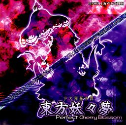

- Welcome to Touhou Wiki!
- Please register to edit. For assistance, check in with our Discord server or IRC channel.
Perfect Cherry Blossom
Perfect Cherry Blossom | |
|---|---|
|
 | |
| Developer | |
| Publisher | |
| Released |
Trial+: December 30, 2002 |
| Genre |
Vertical Danmaku Shooting Game |
| Gameplay |
Single-Player Story Mode |
| Platforms | |
| Requirements |
|
Touhou
Gameplay[edit]
Perfect Cherry Blossom features three playable characters to choose from, and each character has two different sets of skills. Reimu Hakurei is relatively balanced in all areas. Marisa Kirisame moves faster, and uses more powerful attacks with less range. Sakuya Izayoi moves slower, and uses weaker attacks that can hit just about everything on the screen.
A major addition to Perfect Cherry Blossom is the "Cherry" scoring system. Shooting enemies increases your Cherry Points, bombing or dying decreases your Cherry Points, and reaching 50,000 Cherry Points gives you a temporary shield. Cherry Points eventually lead to a higher Cherry Gauge, which increases the points you receive from Point Items.
Other important changes are the appearance of your character's hitbox while you are focused, the properties of your attacks depending on whether you are focused or unfocused, and a helpful cursor along the bottom margin during a boss battle that shows the location of the boss.
This game is also unique in that it includes a "Phantasm Stage" that can be played only after clearing the Extra Stage. ZUN stated that the Extra Stage in this game was meant to be an "easy mode" version; perhaps Phantasm Stage was the original Extra Stage during development.[2]
Name and Concept[edit]
Following on the heels of the Embodiment of Scarlet Devil, Perfect Cherry Blossom was created with the same goals in mind - high speed danmaku, patterned after somewhat abstract concepts. The theme this time around revolves around the Netherworld, and the extra stages also deal a little bit with the Great Hakurei Border and the concept of a "spiriting away", though these are not discussed in very much detail, as the dialogue remains very light.
The name "youyoumu" implies some sort of mysterious, ghostly dream. 妖々, taken to mean "ghostly", is possibly referring to the overall theme of the Netherworld and its inhabitants, including Youmu Konpaku and Yuyuko Saigyouji, the first of which contains the kanji 妖 in her name. It can also be a reference to the Saigyou Ayakashi, which also contains the character. "Perfect Cherry Blossom" is referring to Yuyuko's end goal to force the Saigyou Ayakashi to fully bloom by collecting the essence of springtime. Additionally, the word Ghastly is misspelled as Ghastry on the jewel case in what would be the Japanese pronunciation.
Story[edit]
"Dead bodies are buried under the cherry trees! You have to believe it. Otherwise, you couldn't possibly explain the beauty of the cherry blossoms. I was restless, lately, because I couldn't believe in this beauty. But I have now finally understood: dead bodies are buried under the cherry trees! You have to believe it."
-- Motojirō Kajii, opening of "Under the Cherry Trees"
Winter drags on past its expiration date in Gensokyo, eventually prompting the three main characters – Reimu Hakurei, Marisa Kirisame, and Sakuya Izayoi – to investigate the cause. Their travels lead them into the Netherworld, where they discover that certain people are attempting to gather the essence of spring for themselves, for some unknown cause.
Music[edit]
Perfect Cherry Blossom has 20 tracks in total, and is one of the largest soundtracks in the Touhou Project. ZUN states in the afterword that he wanted to create music that was "intense, emotional, and a little exotic". Rather than adding an oriental spin to otherwise western-sounding tunes, he instead started with an oriental feel as the base and tried to work in a western tone.
ZUN has re-arranged some of the songs on various music CDs, such as Eastern Ghostly Dream and Necro-Fantasy on Ghostly Field Club, Doll Judgement on Changeability of Strange Dream, and Necrofantasia on Magical Astronomy. The fighting games have also featured various themes for characters originating in this game.
ZUN included an unused track in Ghostly Field Club titled Flower of Past Days ~ Fairy of Flower, possibly meant for Stage 4. ZUN was originally going to re-arrange Yuyuko Saigyouji's theme Bloom Nobly, Ink-Black Cherry Blossom ~ Border of Life for her theme in Ten Desires, but since she was only a Stage 1 boss, he ended up creating an original piece: Ghost Lead.
The music remains extremely popular among fans, with many tunes being re-arranged on fan-made CDs.
Press[edit]
A demo version of Perfect Cherry Blossom was released on December 30th in 2002, at the 63rd Comiket. The game later had another demo with only the MIDI soundtrack released on the internet on January 26th 2003. The full version was later released at the 64th Comiket, on August 17th 2003, and it first hit shelves of various doujin stores on September 7.
A week after the game's official release, a 1.00a patch was released that fixed various bugs. On October 24, 2003, the final 1.00b patch was released with more bugfixes.
At the first Reitaisai on April 18, 2004, a score attack event was held where competitors would aim for the highest score on the Phantasm Stage. The stage and dialogue differed slightly from the original, and ZUN composed a new song called Spiritual Domination ~ Speed Fox! for it. This song would later be included in sound sepher's first fan-made arrange album, Cradle -東方幻樂祀典-, released at the following Comiket.
Reception[edit]
The characters in Perfect Cherry Blossom continue to be some of the most popular ones in the Touhou Project.
Its unique Phantasm stage, not present in any other game in the series, particularly appeals to skillful danmaku fans. The Phantasm stage was shown on the British review show Gameswipe as an example of a shoot 'em up. British comedian and satirist Charlie Brooker described the game as "a firework display being sick", and as something "masochistic maniacs actively enjoy dipping into".
Gallery[edit]
Back Cover.
Trial Disc Case.
English patches[edit]
Touhou Community Reliant Automatic Patcher / THCRAP
- Community translations from the Touhou Patch Center wiki.
- Select lang_en during patching.
- Video walkthrough
- Also available as a pre-packaged standalone (not recommended).
These patches are a community translation based on Touhou Wiki and the English Touhou Patch Center Portal.
Visit the thpatch game page to find the specific patch contents for Perfect Cherry Blossom.
External links[edit]
Official[edit]
Unofficial[edit]
- Perfect Cherry Blossom scoreboards at royalflare
- Perfect Cherry Blossom scoreboards at Maidens of the Kaleidoscope
- Perfect Cherry Blossom scoreboards at shmups.system11.org
- Mefidex's TH07-TH11 + TH13 Shot/Bomb Analysis at Maidens of the Kaleidoscope
References[edit]
- ↑ Literally 妖 (spiritual, supernatural, ghostly, etc.), 々 (marker for repeating the previous kanji) 夢 (dream). As ZUN mentions in the demo afterword, the pronunciation youyou contains a double meaning in reference to a line from a poem by Sei Shônagon-- "as the light gradually (ようよう youyou) creeps over the hills"-- so the title can also be taken to mean "gradually-moving dream".
- ↑ ZUN's reply to messages on the former Gensou Bulletin Board 3 ― "In Youyoumu, is Phantasm the Hard version of Extra?" "It is the opposite. As you can see by Ran imitating Yukari's attacks, Extra is the Easy version of it. ^^;"